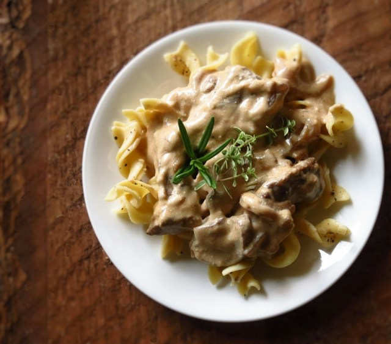

Strogonoff de Frango

Descrição
O strogonoff de frango é um prato quente de origem russa, amplamente adaptado no Brasil,
feito com cubos de frango cozidos em um molho cremoso à base de tomate e creme de leite.
Ingredientes
-
1 colher (sopa) de azeite de oliva
-
1 dente de alho espremido
-
1 cebola pequena picada (100 g)
-
1 peito de frango pequeno, sem pele e sem osso, cortado em iscas (400 g)
-
1 sachê de Tempero SAZÓN® Verde
-
1 pitada de sal
-
1 colher (sopa) de ketchup
-
1 colher (sopa) de mostarda
-
1 xícara (chá) de polpa de tomate (200 g)
-
1 vidro pequeno de cogumelos em conserva, em lâminas, escorrido (100 g)
-
1 lata de creme de leite (300 g)
Modo de preparo
-
Em uma panela média, coloque o azeite de oliva e leve ao fogo alto para aquecer.
Junte o alho e a cebola, e refogue por 1 minuto, ou até o alho começar a dourar. Acrescente
o frango, o Tempero SAZÓN® e o sal, e frite por 6 minutos, mexendo de vez em quando, ou até
dourar o frango por todos os lados.
-
Adicione o ketchup, a mostarda, a polpa de tomate e o cogumelo, e misture. Junte o creme de
leite, mexa e cozinhe por 2 minutos, ou até começar a levantar fervura.
-
Retire do forno e sirva em seguida.
Back to Home